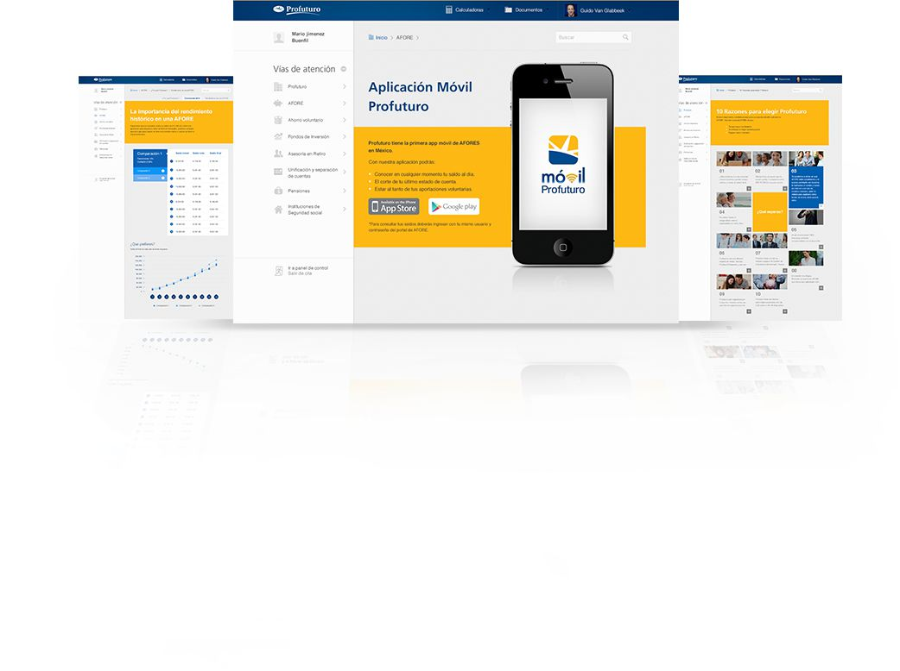

Today is about tomorrow
For most people retirement seems so far away; nevertheless, managing it is a today’s matter. In a world ever changing, offering cutting-edge digital services and products is Profuturo’s commitment with a new generation. We developed a toolkit for potential customers to check their retirement status and develop strategies to plan their future today.
